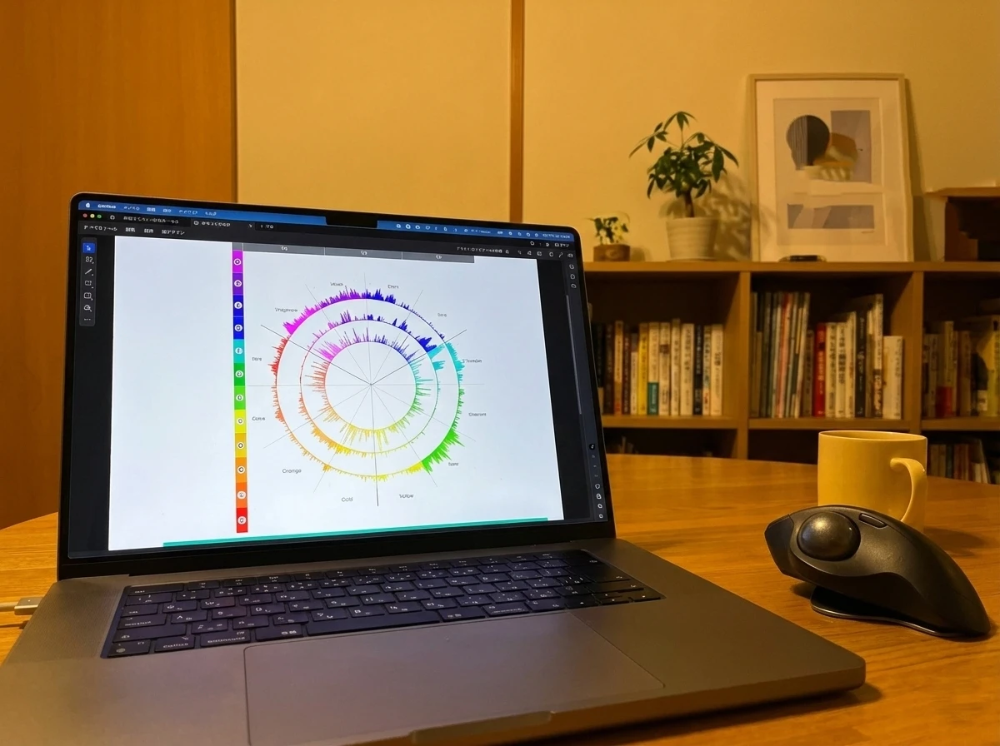
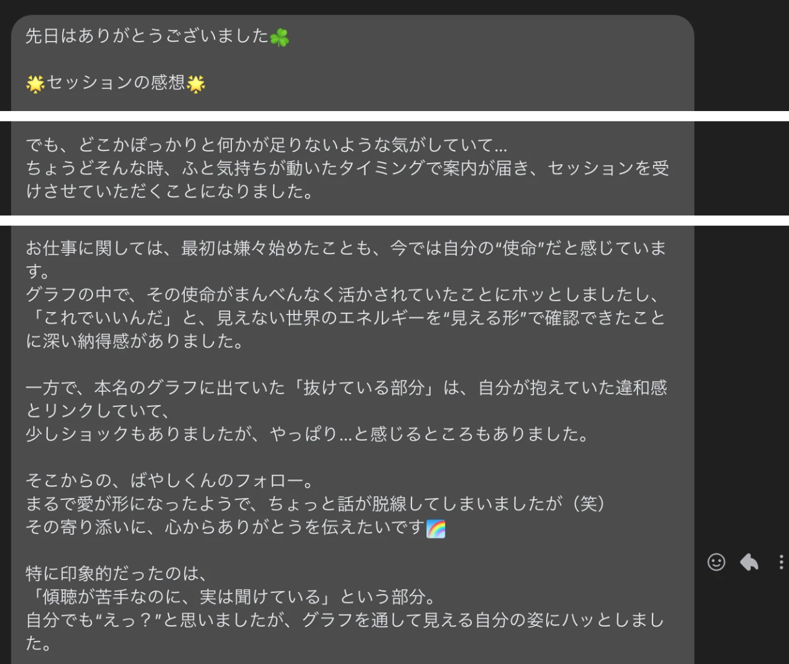
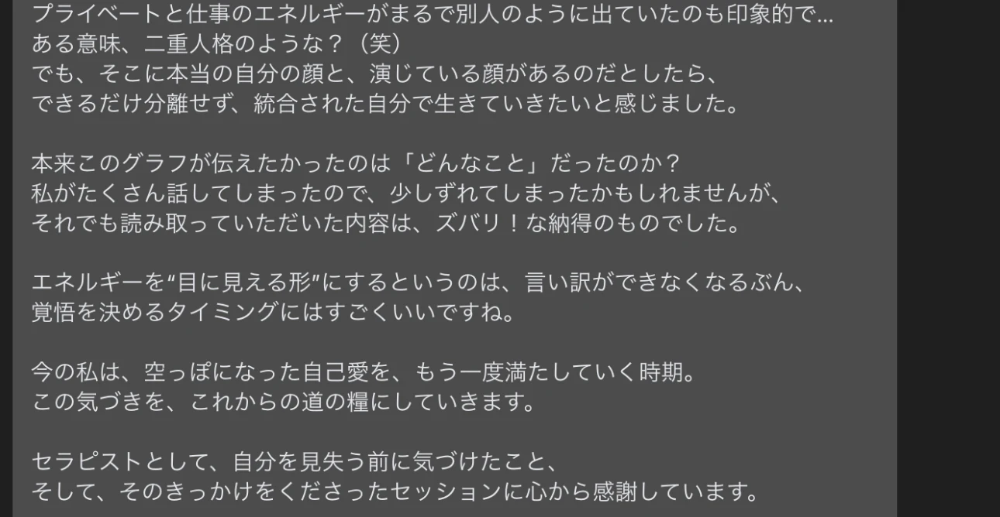

言葉は、取り繕える。声は、隠せない。
真面目にやってきた。
なのに、なぜ何年も同じ場所で燻っているのか。
その正体は、
努力が足りないからではありません。
あなたに深く染みついた、
たった一つの思い込みです。
6秒の声が、
あなた自身も気づいていないそのズレを、
静かに映し出します。

そのモヤモヤは、能力のせいではありません
これから話すことに、
派手な成功率や、
何千人を変えたといった大きな数字は出てきません。
むしろ、
そういうものを掲げるページに、
あなたはもう少し疲れているかもしれません。
代わりに、一つだけ、
先にお伝えしておきたい事実があります。
私は国家資格である救急救命士として、
20年以上、生命の最前線に立ってきました。
そこで関わった人の数は、2,000名を超えます。
この数字の本質は、
経験の長さではありません。
人が本質をむき出しにする瞬間を、
普通に生きていれば一生かけても見ないような密度で、
見続けてきたということです。
人は、本当に追い詰められると、
取り繕う余裕を失います。
ふだんは決して表に出さない部分が、
その瞬間だけ、むき出しになる。
同じ苦境でも、
最後の姿は人によってまるで違いました。
語気を荒げる人、
最後まで穏やかな人。
誰かに囲まれて終える人、
一人きりで終える人。
その差は、
才能でも運でもなく、
その人がどう生きてきたかの結果として、
静かに現れます。
膨大な数の、
取り繕えなくなった人間を見てきたことで、
私は一つ、はっきりと変わりました。
目の前の人を、
表面の言葉や、
社会的な肩書きで判断しなくなったのです。
どんな鎧をまとっていても、
その下で本当は何を抱えているのか。
それが、こちらには伝わってくる。
だからこそ、
今このページを読んでいるあなたにも、
静かな矛盾を感じています。
周りから見れば、
あなたはおそらく順調な側にいる。
安定した仕事、悪くない収入、大きな失敗もない。
それなのに、
なぜこの文章にたどり着き、
ここまで読み進めているのでしょうか。
口では別に困っていないと言えたとしても、
心のどこかが、そうではないと言っている。
その感覚こそが、今日の話の入り口です。
これからお話しするのは、
あなたが良かれと思って信じてきた、
変わるための3つの常識です。
とにかく行動すること。
前向きでいること。
人に迷惑をかけず、
自分のことは自分で解決すること。
どれも正しく聞こえます。
そして、
どれもが、あなたを同じ場所に縛りつけてきた
張本人かもしれません。
なぜそう言えるのか。
その理由を、
私自身の20年と、声という消せない証拠を使って、
順にお見せしていきます。
私が、声にたどり着いた理由
改めて、私の立ち位置をお話しします。
活動名は、
声紋診断 アップデート林。
国家資格である救急救命士として、
生命の最前線に20年以上、身を置いてきました。

ただ、資格や年数そのものを誇るつもりはありません。
大事なのは、
その20年で何を見てきたかです。
私は、人が取り繕えなくなる瞬間を、
2,000名を超える数で見続けてきました。
人は、社会的な立場や普段の口ぶりの下に、
まるで別の本音を隠しています。
その本音が、
隠しきれずに漏れ出る瞬間を、
私は繰り返し目にしてきたのです。
だからこそ、ある時から、
目の前の人の言葉を、
言葉のまま受け取らなくなりました。
もう大丈夫です、
と口では言いながら、
表情も行動も、まったく逆のことを訴えている。
そういう矛盾が、
はっきり見えるようになっていったのです。
その感覚を、誰が見ても分かる形にできないか。
そう考えていた私が出会ったのが、
声紋診断でした。
これが、私自身の大きな転機になりました。
声帯や声質は、
指紋と同じで、その人固有のものです。
しかも声は、
精神状態によって上ずったり、
震えたりする。
自信のありそうな声と、
そうでない声が違うことは、
たいていの人が肌で感じ取れるはずです。
つまり声には、その人の今の状態が、
そのまま乗っています。
この声を、自分の名前を発してもらうことで
たった6秒だけ記録し、
周波数として解析します。
周波数帯を細かく分類し、
3つの層、12の色で表示する。
この意味づけには2万人以上の統計データが使われていて、特許技術を用いています。
曖昧な感覚ではなく、統計と科学に裏づけられた形で、
その人自身も気づいていない抑圧や、
素質とのズレが見えてくるのです。
ただ、私は診断結果を突きつけて終わりにはしません。
声紋診断は、
あくまでスタート地点です。
そこから先、
表情や、言葉と言葉の間、その場の空気といった、
数値にならない情報を読み取りながら対話していく。
ここは、
機械にはできない、
人間にしかできない部分だと思っています。
そして、
その関わりを半年という時間をかけて続けます。
人は一人では変われません。
変わり続ける人間のそばに居続けることでしか、
根っこの部分は変わらないからです。
ここで、正直にお伝えしておきたいことがあります。
今、私が伴走しているクライアント様は
多くはありません。
派手な実績を並べられないのが、
今の私の現在地です。
それでも、
この活動を続けているのは、
きれいなプロフィールを作りたいからではありません。
安全な場所にとどまったまま
20年くすぶり続けた私自身が、
今もあがきながら前へ進もうとしている。
その姿そのものが、
同じように燻っている人の背中を押せる
と信じているからです。
体験セッションを受けた方からは、
こんな声をいただいています。
自分のビジョンや気持ちがすっきりした。
何を進めればいいのかが、明確になった感じがする。
対人支援の仕事をされているある方は、
診断のグラフを見て、傾聴が苦手なのに実は聞けている、という自分の姿にハッとした、
と話してくれました。
自分でも気づいていなかった一面が、
目に見える形になったからです。
演じている自分ではなく、
統合された自分で生きていきたい。
そう感じたと、伝えてくれました。


私が大切にしているのは、きれいごとではなく、
自分を活かしたいという思いです。
ただ、自分一人では、自分を活かしきれない。
誰かと関わり、
その人が前を向き、
心が軽くなって、
その人らしさを取り戻していく。
その関わりを通してはじめて、
私も自分の人生を生きられている。
そう思っています。
さて、
ここからが本題です。
あなたが良かれと信じてきた、
変わるための3つの常識。
その正体を、一つずつ見ていきます。
あなたを縛ってきた、3つの常識
ここから、少し踏み込んだ話をします。
あなたはこれまで、変わるために、
いろいろなことをしてきたはずです。
本を読み、
セミナーに通い、
高額な講座に申し込んだこともあるかもしれません。
真面目に、正しいとされることをやってきた。
それなのに、
なぜ、まだここにいるのでしょうか。
理由は、
あなたの能力が低いからでも、
意志が弱いからでもありません。
あなたが良かれと信じて握りしめてきた正しさそのものが、実はあなたを同じ場所に縛りつけてきた。
私はそう考えています。
世の中には、
自分を変えるための常識が、
当たり前の顔をして広まっています。
今日は、その中でも特に多くの人を止めている3つを、
正面から扱います。
一つ目は、
とにかく行動しろ、という常識です。
動けば変わる。
動かないから変わらない。
一見、反論の余地がないように聞こえます。
二つ目は、
ポジティブでいることが大事だ、という常識です。
前向きに考えよう。
ネガティブは良くない。
これも、誰も否定しにくい響きを持っています。
三つ目は、
自分のことは自分で解決すべきで、
人に迷惑をかけてはいけない、という常識です。
これは最も根が深い。
多くの人が、幼い頃から、親や周りの大人から
繰り返し教え込まれてきたものだからです。
先に言っておきたいのは、
私はこれらを教えてきた業種や、
コーチングという分野そのものを
否定したいのではないということです。
それぞれ、
必要な人にとっては本当に必要なものです。
私が問いたいのは、もっと大きな枠、
つまり常識という多数派の空気そのものです。
常識とは、要するに多数派の意見にすぎません。
多くの人がそう言っているから正しい、
というだけのことです。
そして、その多数派の型に、
あなたの心が本当に馴染んでいるかどうかは、
まったく別の問題です。
周りから見て順調に見えたとしても、
あなたの心がそうではないと言っているなら、
それはうまくいっている状態とは言えないのです。
これから、この3つを一つずつ、
私自身の経験と、
声という消せない証拠を使って見ていきます。
おそらく、
途中で少し落ち着かない気持ちになるはずです。
信じてきたものが揺らぐのは、
当然のことです。
でも、その揺らぎの先にしか、
あなたがずっと感じてきた違和感の正体はありません。
まず、一つ目の常識から見ていきましょう。
神話1 とにかく行動すればいい
まず、一つ目の常識です。
とにかく行動しろ、
動けば変わる。
あなたも一度は言われたことがあるはずです。
たしかに、
行動しないと何も始まらないのは事実です。
だからこの言葉自体が
間違っているわけではありません。
問題は、この言葉を受け取った多くの人が、
動けなくなって止まってしまうことにあります。
行動が続かない。
少しやってみて、
いつのまにかやめている。
もし動くことがそんなに簡単なら、
これほど多くの人が同じ場所で
足踏みしているはずがありません。
つまり、
行動の前に、もっと大事な要因がある
ということです。
なぜ、とにかく行動しろ、が広まったのか。
私は、
成功者バイアスだと考えています。
うまくいった人は、
たまたま運の要素が大きかったり、
折れない心を持っていたりした。
その人が振り返って語るとき、
行動したから成功した、
というエッセンスだけが残ります。
でも、その陰には、同じように行動して倒れていった
数えきれない人たちがいる。
その姿は語られないので、
受け取る側は、動けばいい、
という部分だけを学んでしまう。
本質が、そこでずれるのです。
では、
やみくもに動くと何が起きるか。
自分の特性を知らないまま、
世の中で良いとされている方向、
外側の正解に、自分を無理やり当てはめようとする。
すると、動けば動くほど消耗していきます。
たとえるなら、
魚が一生懸命、木に登ろうとしているようなものです。
登れないのは、
その魚の能力が低いからではありません。
魚は本来、水の中でこそ輝く。
それなのに木に登ろうとして、
登れない自分を責め、
自信を失っていく。
これは、私自身がまさに通ってきた道です。
周りから、こうした方がいいと言われ、
その通りに頑張ってきました。
けれど、本当に心が消耗しました。
人間関係も、
少しずつ悪くなっていった。
何より、うまくいっている感覚が、
まるでなかったのです。
そして、
どんどん自分に自信を持てなくなっていきました。
当時の私は、
努力が足りないのだと思っていました。
でも、そうではなかった。
方向が、自分に合っていなかっただけなのです。
自分の適性にはまった場所でなら、
話はまったく逆になります。
動くほどにエネルギーが湧いてきて、
むしろ動きたくなる。
同じ行動でも、
はまっているかどうかで、
疲弊するか、
加速するかが、
正反対に分かれるのです。
では、行動の前に何を見るべきか。
行動を生み出しているのは、
あなたの中の信念です。
信念が、
世界の受け取り方や解釈を決めている。
その解釈が、行動を生む。
だから、行動そのものをいじる前に、
その大元にある信念を見なければ、
何も変わりません。
その信念は、
過去の痛みや、うまくいった経験から作られています。
当時のあなたにとっては、それが正解だった。
その信念のおかげで身についたスキルや立場も、
確かにあったはずです。
でも時が経つにつれ、
メリットよりデメリットが上回ってくる。
人間関係が、なぜかうまくいかない。
内面の、何だかシックリこない感覚が、
無視できないレベルになってくる。
それはとても苦しい。
けれど、その苦しさこそが、
自分の在り方を見つめ直すきっかけであり、
あなたのOSをアップデートするタイミングが来た、
という合図なのです。
だから私は、いきなり行動させません。
まず声紋診断で、
あなたの素質と、
今の抑圧の状態を映し出します。
それが、あなたの現在地です。
現在地が分かってはじめて、
流行りのものにやみくもに飛びつくのではなく、
あなたにとって正しい方向を知った上で、
一歩目を踏み出せる。
魚が、木ではなく、
水へ向かえるようになるのです。
これで、一つ目の常識が崩れました。
でも、これはまだ序の口です。
次の常識は、もっと多くの人が、
良かれと信じて自分を追い込んでいるものです。
神話2 ポジティブでいることが正義
二つ目の常識は、
ポジティブでいることが大事だ、
というものです。
前向きに考えよう。
ネガティブは良くない。
おそらく、
一度も疑ったことがない人も多いはずです。
誰もこれを否定しません。
理由は単純で、明るく見えるし、
口にした瞬間だけは気が楽になるからです。
でも、だからこそ厄介なのです。
問題は、ポジティブ思考を、
すべてを肯定的にとらえること、
と曲解してしまう点にあります。
そう受け取ると、
反省も、内省も、修正もできなくなります。
ただの、何も考えていない楽観主義です。
うまくいかなかったことを糧にして、
だったら次はどうするか、
と考える回路が生まれない。
結果として、同じ失敗を何度も繰り返します。
良くなりたいはずなのに、
現状はいつまでも変わらない。
そのうち、ネガティブな感情を否定し、
ネガティブな人まで否定するようになり、
自分はうまくいっていると思い込んでいく。
これが、明るい言葉の下で静かに進行していきます。
これも、
私自身が通ってきた道です。
無理にポジティブな言葉を
吐いていた時期がありました。
本心とずれた言葉を口にするたびに、
心のどこかがざわつく。
前向きなことを言うたびに、
消耗していく感覚があったのです。
そして、ポジティブでいようとするあまり、
ネガティブなものを一切、
目に入れないようになりました。
そのネガティブとは、
要するに、自分が見たくないものです。
うまくいっていない事実を直視せず、
自分がポジティブに捉えられる範囲だけを見ていた。
だから検証がまったく進まない。
視野はどんどん狭くなり、
本当に向き合うべき点が、
まったく見えなくなっていきました。
それで何かが変わったかというと、
何も変わらないどころか、
むしろ悪化した。
ただ痛いところから目をそらしていただけなのに、
それを前向きさだと思い込んでいたのです。
やっかいなのは、
心の奥では、自分が避けていることに気づいている、
ということです。
言っていることと、
本心とのあいだにあるズレ。
その不一致こそが、自分をずっと苦しめていた。
ここで、声の話に戻ります。
無理にポジティブな言葉を発しているとき、
喉や胸の緊張は、本音のときとは必ず違っています。
そして、その違いは声の周波数に表れます。
喉の筋肉の緊張状態が、
物理的に声質へ影響するからです。
つまり、口では前向きなことを言えても、
その裏にある違和感は、
外へ漏れ出ている。
周りは、それを言葉にできないまでも、
なんとなく感じ取っています。
丁寧な言葉づかいなのに、なぜか距離を感じる。
そういう相手が、
あなたにもいるかもしれません。
では、本当のポジティブ思考とは何か。
それは、
ネガティブを無かったことにすることではありません。
適切に自分を振り返り、
うまくいかなかった事実にちゃんと向き合った上で、
それでも活路はあると信じ、
その経験から何かをつかみ取り、
そのために動くこと。
逃げではなく、直視から始まる前向きさです。
私の関わりでは、
まず声紋診断と、表情や間といった非言語の情報から、
あなたが大きな声でごまかしている違和感を捉えます。
そこに、言葉と非言語の両方で介入する。
すると、これまで蓋をしてきた違和感が、
はじめて言葉になります。
言葉になると、本当はこうしたい、
という願望が見えてくる。
その願望に向けて、どうすれば実現できるかを考える。
これが、
消耗しない、本物の前向きさです。
これで、二つ目の常識も崩れました。
ただ、ここまでの二つは、
まだ準備運動にすぎません。
次にお話しするのは、
あなたが最も手放しにくい、
根の深い常識です。
多くの人が、
これを一種の呪いのように抱えたまま生きています。
神話3 人に迷惑をかけてはいけない
三つ目です。
自分のことは自分で解決すべきで、
人に迷惑をかけてはいけない。
これが、最も根が深い。
なぜ根深いのか。
この言葉は、多くの人が幼い頃から、
親や周りの大人に繰り返し
教え込まれてきたものだからです。
だから、正しいと信じ込んでいる。
ただ、この迷惑をかけないという言葉は、
いつのまにか、
自分勝手なことをするな、
周りに合わせなさい、
というニュアンスで受け取られていきます。
その結果、どうなるか。
自分らしく行動すること、自分の思うように
何かをやったり発言したりすることが、
どちらかといえば良くないことだ。
そんな認識を持って生きてきた人が、
とても多い。
でも、そうした生き方は、
実は自分の心に反していることが多いのです。
そして多くの場合、周りにうまく溶け込めないのは
自分がうまくやれないからだ、
だからもっと合わせるべきだ、
という自己否定につながっていく。
合わせようとするほど、
自分の本質から外れ、
苦しさやくすぶりは高まる一方です。
つまり、いざ自分らしく生きようとしたとき、
これまでの迷惑をかけてはいけないという常識を
破らなければならない。
長年かけて作り上げてきた、
自分のアイデンティティの一部を
壊さなければならない。
だからこそ、ここが大きな壁になります。
ある意味、
呪いのようになっているのです。
なぜ人は、これを手放せないのか。
幼少期からその教育を受け、
周りもその常識で満ちていた環境で育った。
だから、深いところで、
それがもう自分のアイデンティティになっている。
その一部を手放すこと、
それに反した行動を取ることは、
とてつもない恐怖や不安を伴います。
では、この呪いを、
私はどう見ているか。
まず、事実を見ることです。
迷惑をかけまいとして一人で抱え込んだ結果、
何が起きているか。
本人はどんどん苦しくなっている。
周りの人も、実はそれを喜んでいない。
迷惑をかけまいとしたことが、かえって周りにも自分にもしわ寄せがきている。
そういう現実が、
たいてい起きています。
私はこれまで、迷惑にならないようにと、
自分の見られ方ばかりを気にしている人と、
たくさん関わってきました。
そういう人ほど、
周りに自分を合わせ、
抑圧する方向へ動いていました。
何をするにも周りがどうしているかばかり気にして、
自分がどうしたいのかが分からなくなっている。
優しそうに見えても、
どこか距離を感じて、
本当の意味でつながりにくい。
本人も、人間関係に苦しんでいたりします。
逆に、はたから見ると自由にやっている人ほど、
楽しそうで、人が集まってくる。
そして、その人を迷惑だと感じている人は、
ほとんどいなかったのです。
むしろ、決まりをきっちり守ろうとする人ほど、
他人の一挙手一投足が気になって、
揚げ足を取ったり、
素直に人を応援できなかったりする。
そういう姿を、
私は何度も見てきました。
ここに、遠慮という落とし穴があります。
迷惑をかけまいという遠慮は、
結局のところ、本心を隠すことです。
そして人の本能は不思議なもので、
言っていることと本心のギャップを、
敏感に感じ取ります。
どれだけ丁寧な言葉づかいでも、
その内側がただの遠慮や保身であるとき、
周りはそこに得体の知れない不安を覚える。
つまり、
迷惑をかけまいと自分を抑えることは、
周りにも不安を与え、
自分自身にも不安を植えつけてしまうのです。
もちろん、言い方に気をつける配慮は必要です。
でも、遠慮で本心を隠すことは、
周りにも自分にも、良い影響を与えていません。
本当のことは、こうです。
自分らしく生きることは、
結局、周りのためになります。
自分らしく生きる人は、
まず自分自身に安心していて、
その安心感を周りにも振りまきます。
エネルギーに満ちているから、
人からエネルギーを奪う必要がなく、
他人に寛容になれる。
だから周りは、その人に関わりたいと思い、
その人からエネルギーをもらえるのです。
ただ、
この呪いは、
本人一人ではなかなか外せません。
本人は一生懸命やっているがゆえに、
自分の行動が生んでいる現実が見えないからです。
だから、本人以外の視点が要る。
声紋診断は、
本人も気づいていない抑圧を、
客観的な形で映し出します。
そこに、
私が第三者の目線と非言語の関わりを重ねる。
本人の解釈と、
実際の事実とのズレが見えたとき、
はじめて自覚が生まれ、
行動が変わり始めます。
これで、3つの神話がすべて崩れました。
とにかく行動しろ。
前向きでいろ。
迷惑をかけるな。
どれも、あなたを縛ってきたものでした。
では、
その先に何が残るのか。
次に、崩した後に見えてくる、
たった一つの本当のことをお話しします。
3つを崩した先に残る、たった一つのこと
ここまで、3つの常識を崩してきました。
とにかく行動しろ。
前向きでいろ。
迷惑をかけるな。
一つずつ見てくると、実はこの3つが、
同じ根っこから伸びていたことに気づきます。
その根っことは、
外側にある正解に、自分を合わせようとしていた、
ということです。
世の中で良いとされる行動。
明るくあるべきという空気。
人に合わせなさいという教え。
どれも、自分の外側にある基準です。
あなたはずっと、
その基準に自分をはめ込もうとして、
はまらない自分を責めてきた。
うまくいかないのは自分のせいだと。
でも、本当に見るべきは、
外側の正解ではありません。
目の前の事実です。
あなたが思い悩んでいるということ自体が、
今の状態が、あなたの望む状態ではないという事実を
示しています。
だったら、何かを変えなければならない。
そして、変えるべきは行動でもなく、性格でもなく、
そのもっと手前にある、
あなたが世界を見るときの色眼鏡です。
その色眼鏡を外すために、
たった一つ、頼りにできるものがあります。
あなたの違和感です。
なんだかシックリこない。
この方向は違う気がする。
楽しくない。
そのザワつきを、
あなたはこれまで、気のせいだ、わがままだ、
と押し殺してきたはずです。
でも、その違和感こそが、
あなたの本能が鳴らしている、
いちばん正直な信号なのです。
言葉は取り繕えても、
この感覚だけは嘘をつけない。
だから、違和感を信じる。
これが、3つの常識を崩した先に残る、
たった一つの本当のことです。
この一点が変わると、
生き方のルールそのものが変わります。
一つ。
行き先は、自分で決める。
誰かが用意した正解の道ではなく、
自分が選んだ道を、
正解にしていく。
この順番が逆だったのです。
二つ。
行き先さえ決めれば、
そこへ向かう答えは、必ず後から見つかります。
多くの人は、
答えが見えないから動けないと言います。
でも実際は、逆です。
決めていないから、
答えが目に入らないだけなのです。
三つ。
見たい世界を、見続ける。
人は、自分にとって重要だと決めたものだけを、
意識に上げるようにできています。
だから、どこを見るかを自分で選ぶ。
それだけで、
目に入る情報が変わっていきます。
四つ。
根拠のない自信こそ、最強です。
うまくいく保証などなくても、
なぜか、やればできると思えている。
その状態にある人は、少しつまずいても、
きっと何かあるはずだと次の一歩を踏み出します。
そして、本当に見つけてくる。
信じているから、
途中でやめないのです。
ここまで読んで、
なぜ今までこれを誰も教えてくれなかったのか、
と思うかもしれません。
でも、答えはシンプルです。
あなたがこれまで生きてきた環境の中に、
たまたま、それを教えてくれる人がいなかった。
ただそれだけです。
この考え方は、
昔からずっと存在していました。
現に、あなたは変わりたいと思ったからこそ、
この文章にたどり着いている。
教わるチャンスは、
もともとちゃんとあったのです。
正しい道を探すのを、もうやめる。
自分の選んだ道を、正解にしていく。
できない理由を数えるのを、やめる。
できる理由を探し始める。
この転換が起きたとき、
人はようやく、
自分の人生を歩き始めます。
では、この真実を、
どうやって具体的に自分のものにしていくのか。
次に、私が実際に行っている関わり方をお話しします。
では、具体的に何をするのか
では、違和感を信じる、
を絵に描いた餅で終わらせないために、
私が実際に何をしているのかをお話しします。
やっていることは、
大きく分けて三つです。
声紋診断で現在地を映し出し、
コーチングで進みたい方向を見つけ、
半年という時間をかけて、その変化に伴走する。
この三つを組み合わせています。
最初に、声紋診断です。
ここでいちばん大きいのは、
声は嘘がつけない、ということです。
言葉はいくらでも取り繕えます。
でも、あなた自身も気づいていない素質とのズレや、
抑圧の状態は、声に表れます。
それを、
統計と特許技術に裏づけられた形で、
客観的に映し出す。
これには、
思いがけない効き目があります。
それは、
いい意味で、自分に対する諦めがつくことです。
私たちは情報の海の中で、
あれもできる、これもやった方がいい、
と選択肢を増やしすぎて、
かえって動けなくなっています。
声紋診断は、
その増えすぎた選択肢を、
あなたの素質に合ったものだけに絞ってくれる。
すると、あとはできることをとことんやるだけだ、
という開き直りに近い強さが手に入ります。
木に登ろうとしていた魚が、
自分は水の中で泳げばいいと分かる。
その安心感です。
ただし、
ここで正直にお伝えしておきます。
診断結果が、
絶対の正解というわけではありません。
それはあくまでスタート地点です。
本当に人生を動かすのは、
そこから先の関わりのほうです。
次が、コーチングです。
ここは、
機械にはできない、人間にしかできない領域
だと思っています。
声のデータだけでは拾えない、
表情のわずかな変化、
言葉と言葉の間、
その場の空気。
そうした非言語の情報を読み取りながら、
対話していきます。
そして、私自身の非言語も、
あなたに影響を与えます。
人と人が向き合うことでしか起きない、
内面の変化を促していくのです。
このとき、
私が意識してやらないことがあります。
答えを言わないことです。
あなたにとっての本当の正解は、
あなたにしか分かりません。
だから私は、自分の解釈をあなたに押しつけません。
あなたが必ず自分で答えを導き出せると信じているからこそ、謙虚な姿勢で、隣を歩かせてもらう。
それだけです。
そして三つ目が、
半年間の伴走という環境です。
人は一人では変われません。
今のあなたを形作っているのは、
日々のいちばん身近な環境と、
周りの人との同調です。
だから、その環境を一人で変えるのは、
とても難しい。
変わり続けることを諦めない人間のそばに居続ける。
その同調の力を使って、
あなたの普通そのものを、
少しずつアップデートしていきます。
なぜ、
これを私がやるのか。
すごい知識やスキルがある人間だから
ではありません。
むしろ逆です。
私は安定した場所に身を置いたまま、
20年、くすぶり続けました。
何度も諦めようとして、それでも諦めきれなかった。
深いところで自信がなくて、
それを隠すために虚勢を張り、
その結果また自信を失う。
そんな悪循環の中にいたのです。
このままではいけない、
どうにか抜け出したい。
その思いから、
ようやく自分の内面と向き合い始めました。
痛みをさらけ出し、格好悪い自分をさらけ出す。
それを重ねて、
自分自身がクリアになっていくほど、
不思議と、周りの人の抱えているものまで見えるようになっていきました。
だから、あなたの違和感も、
私には捉えられます。
受けた人が、どう変わっていくか。
まず、自分の内面のエラーに気づき、
腑に落ちる瞬間が来ます。
腑に落ちるから、行動が変わる。
物の見方が変わり、現実が変わり始める。
最初の一歩が、いちばん怖い。
だからその小さな一歩から、
私が伴走します。
そこで得た小さな自信を積み重ねて、
最終的には、
私がいなくても自分で進んでいける自分を、
手に入れてもらう。
それが、
この関わりのゴールです。
言葉は取り繕える。
でも、
声は隠せない。
ここから、
あなたの人生をアップデートしていきましょう。
なぜ、これを誰も教えてくれなかったのか
ここまで読んで、
こう思った方もいるはずです。
もしこれが本当なら、
なぜ今まで誰も教えてくれなかったのか、
と。
先に言っておくと、
誰かが悪意を持って、
あなたに真実を隠していたわけではありません。
答えは、もっと静かで、もっと単純です。
あなたがこれまで生きてきた環境の中に、
たまたま、それを教えてくれる人がいなかった。
ただ、それだけのことです。
考えてみてください。
世の中に流れてくる成功の話は、
ほとんどが、うまくいった人の語りです。
うまくいった人が振り返って、
行動したから成功した、
諦めなかったから道が開けた、
と語る。
その言葉は力強く、
耳に残ります。
でも、その裏側には、
同じように行動して、
同じように諦めずに、
それでも報われなかった数えきれない人たちがいる。
彼らの声は、語られません。
だから受け取る側には、
うまくいった人の結論だけが届く。
とにかく動け、前を向け、
という部分だけが、
まるで法則のように広まっていくのです。
これは、
誰かが仕組んだ陰謀ではありません。
ただ、成功は声が大きく、失敗は沈黙する。
その非対称が、
常識という空気を作っているだけです。
そして、きれいに整った公式ほど、
受け取りやすいから広まります。
あなたの違和感を信じなさい、
自分で行き先を決めて、
それを正解にしていきなさい。
こういう話は、
行動すればうまくいく、
という一言に比べて、
受け取るのに手間がかかる。
だから、なかなか広まらないのです。
真実だから広まる、というわけではないのが、
現実です。
もう一つ、理由があります。
違和感を信じて、周りと違う道を選ぶ、というのは、
それを語る側にとっても、簡単なことではないのです。
常識とは多数派の意見です。
そこから外れるのは、
本能的に怖い。
だから、
自分自身がその怖さを一度くぐり抜けた人でなければ、
この話は、心からは語れません。
私自身、長いあいだ、
安定した場所で燻り続けてきました。
周りに合わせ、本音を飲み込み、
それでいいのだと思い込もうとしてきた。
何度も諦めようとして、諦めきれなかった。
その苦しさの果てに、
ようやく自分の内面と向き合い、
格好悪い自分をさらけ出す覚悟が決まった。
だからこそ、今、
これをあなたに話せています。
逆に言えば、
その痛みを通っていなければ、
私にもこの話はできなかったと思います。
ここで、はっきりさせておきたいことがあります。
私は、他のやり方や、
他の専門家を否定したいわけではありません。
それぞれのやり方は、
それを必要とする人にとっては、
本当に必要なものです。
私が問いたいのは、
あなた一人ではありません。
みんながそうしている、
という、もっと大きな空気の方です。
もし、
あなたがこれまでいろいろ試して、
それでもうまくいかなかったのなら。
そのときは、私のような関わり方も、
一度試してみる価値があると思っています。
そして、忘れないでほしいことがあります。
この考え方は、
昔からずっと存在していました。
今日、突然生まれたものではありません。
現に、あなたは変わりたいと思ったからこそ、
この文章にたどり着いた。
教わるチャンスは、
もともとあなたのすぐそばに、
ちゃんとあったのです。
二つの未来
ここで、少しだけ立ち止まって、
二つの未来を思い浮かべてみてください。
一つは、
これまで通り、常識のまま生きていく未来です。
明日も、周りに合わせます。
言いたいことは、
飲み込みます。
違和感は、気のせいだと言い聞かせます。
前向きな言葉で、
うまくいっていない事実に蓋をします。
迷惑をかけないよう、一人で抱え込みます。
どれも、これまで通りです。
だから、
大きな失敗は起きません。
表面上は、何も変わらず、
穏やかに過ぎていきます。
ただ、心の奥の、
あのザワつきだけは消えません。
むしろ、日を追うごとに濃くなっていく。
ふとした時、SNSで、前に進んでいる誰かを見ては、
自分だけが同じ場所で足踏みしているような感覚に襲われる。
やりたいことが何なのか、いまだに分からない。
何も変わっていない。
何をすればいいのかも分からない。
そんな言葉を、また飲み込む。
一年後も、三年後も、
この繰り返しかもしれません。
このまま何も変わらないまま歳をとっていく
というその未来は、劇的な出来事としてではなく、
こうして静かに、少しずつ、確定していきます。
誰のせいでもありません。
ただ、今の思考のパターンと、
今の選択の基準を握りしめたまま生きれば、
現実は、その基準の通りにしか動かないからです。
もう一つは、
その違和感を、はじめて信じてみる未来です。
気のせいだと押し殺してきたザワつきを、
あなたの本能が鳴らしている、
いちばん正直な信号として、扱ってみる。
無理にポジティブでいるのをやめ、
見たくなかった事実を、静かに直視してみる。
一人で抱え込むのをやめ、
自分の抑圧を客観的に映してくれる目に、
一度だけ、頼ってみる。
そこで見えてくるのは、
あなたの素質に合った、あなただけの行き先です。
魚が、木ではなく、水へ向かい始める。
動くほどに消耗するのではなく、
動くほどにエネルギーが湧いてくる。
周りの評価ではなく、
自分の内側で、これでいいのだと感じられる。
安心とともに、自分を活かして生きている、
という感覚です。
どちらの未来を選ぶかは、
大きな決断のように聞こえるかもしれません。
でも、
本当はもっと手前の、
小さな一点の違いです。
目の前の事実を、
色眼鏡を外して見る勇気があるかどうか。
ただ、
それだけです。
そして、それはとても勇気がいることです。
だからこそ、
その最初の一歩を、
一人で踏まなくていいように、私がいます。
正しい道を探し続けるのは、
もうやめる。
自分の選んだ道を、正解にしていく。
もし、その生き方に少しでも心が動いたなら、
次の話を読み進めてください。
無料声紋診断セッションへ
ここまで読んでくれた、ということ自体が、
一つの答えだと思っています。
人の脳は、自分にとって重要なものだけを、
意識に上げるようにできています。
逆に、どうでもいいものは、
盲点として、あえて目に入らないように処理される。
たとえば、車を買おうと決めた瞬間から、
狙っていた車種が、
街中でやたら目につくようになる。
実際に増えたわけではありません。
あなたの中で重要度が上がったから、
意識が拾うようになっただけです。
同じことが、今起きています。
この文章が目に留まり、
ここまで読んでいる。
それは、
あなたの無意識が、
これを重要な情報だと判断した証拠です。
人生を今より良くしたいという願望が、
意識では気づかないほど深いところにあって、
だからこそ、
あなたはここにたどり着いたのだと思います。
だから、無理に決断を迫るつもりはありません。
ただ、その違和感を一度だけ、確かめてみませんか、
という提案をします。
用意しているのは、
無料の声紋診断セッションです。
流れはシンプルです。
まず、あなたの声を6秒だけ録音し、
解析します。
そのデータをもとに、
オンラインで対話しながら、
あなたの現在地を一緒に見ていきます。
ここは大事なので書いておきますが、
アプリで数値が出て終わり、ではありません。
声紋診断はあくまで入り口で、
そこから先の対話にこそ、
本当の意味があります。
診断結果が絶対の正解なのではなく、
それをスタート地点にして、
あなたが本当はどこへ進みたいのかを、
一緒に言葉にしていく時間です。
このセッションで、あなたは
自分の現在地を知り、
進みたい方向の手がかりを持ち帰れます。
売り込みはしません。
必要なことは、
すべて同意を得ながら進めます。
もちろん、
変化のために必要だと思えばご提案はしますが、
無理にどうこうすることはありません。
一つだけ、正直にお伝えしておきます。
お受けできるのは、
月に5名までです。
一人ひとりと丁寧に向き合うと、
こちらもかなりのエネルギーを使うので、
数をこなすことができないのです。
これは煽りではなく、
質を保つための、
こちらの事情です。
それから、このセッションが向いている人と、
そうでない人がいます。
誰かがなんとかしてくれると思っている人、
棚ぼたを期待している人、
今の状態に十分満足している人には、
正直、向きません。
逆に、
自分のことをまだ諦めていない人、
長年もがいてきた人、
なんとかしたいと思い続けてきた人
には、受けてみる価値があると思います。
申し込みは、
LINEから受け付けています。
登録して、予約していただくだけです。
LINEでは、動画や書籍には載せていない、
人生をアップデートするための考え方も、
ときどき配信しています。
すぐに予約しなくても、
そこから受け取ってもらうだけでも構いません。
最後に、これだけ。
判断を先延ばしにする、という選択を、
あなたはこれまで何度してきたでしょうか。
責めているのではありません。
ただ、今の現実が望んだものでないなら、
その現実を作っているのは、今の思考のパターンと、
選択の基準です。
その基準を握りしめている限り、
来年も再来年も、景色はそう変わりません。
逆に言えば、
その基準が変わったとき、景色は変わり始めます。
正しい道を探すのは、もうやめる。
自分の選んだ道を、
正解にしていく。
その最初の一歩を、
一人で踏み出さなくていいように、私がいます。
言葉は、取り繕える。
声は、隠せない。
ここから、
あなたの人生をアップデートしていきましょう。